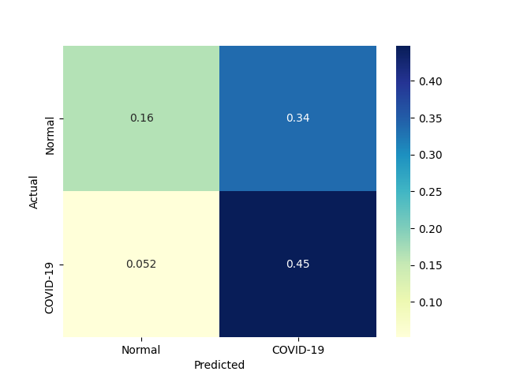
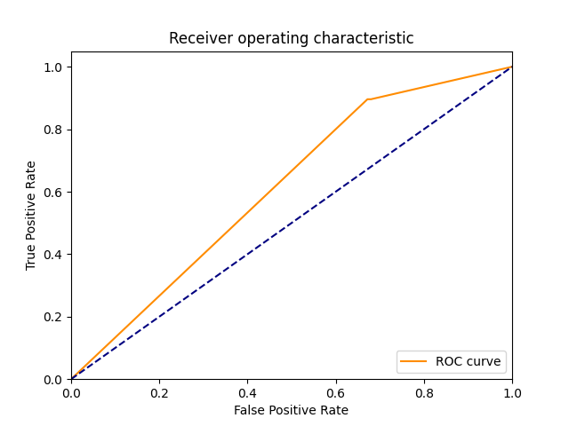
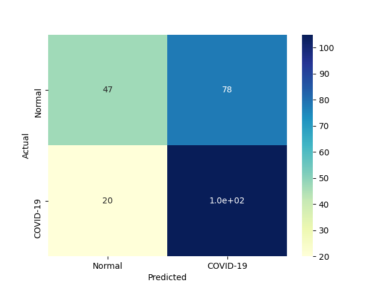
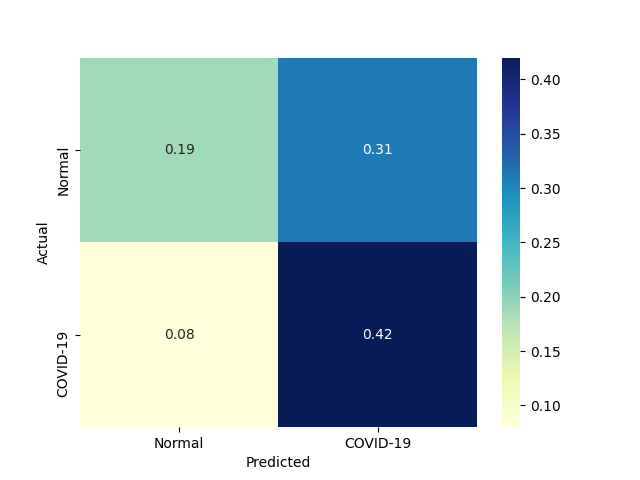
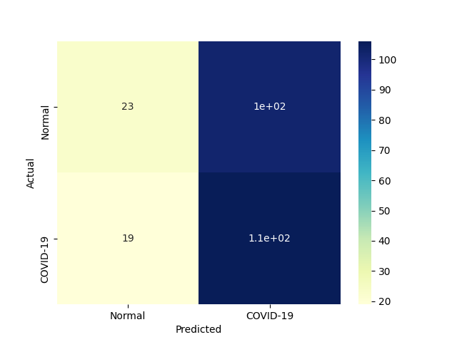
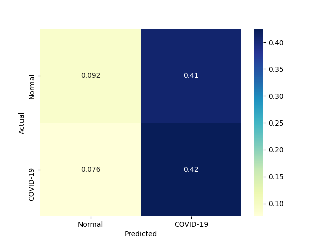
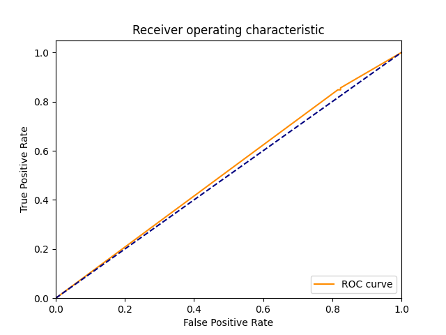

| 1 |
RealBoost |
An RealBoost classifier |
5824.596545 |
0.156615 |
107 |
70 |
55 |
18 |
0.856 |
0.560 |
0.660494 |
0.708 |
0.292 |
0.745645 |
0.993737 |
0.000128 |
4.761018 |
 |
 |
 |
| 0 |
DiscreteNBC |
DiscreteNBC |
331.226967 |
185.793574 |
103 |
58 |
67 |
22 |
0.824 |
0.464 |
0.605882 |
0.644 |
0.356 |
0.698305 |
0.883840 |
0.002108 |
0.003758 |
 |
 |
 |
| 4 |
GaussianNBC |
Gaussian Naive Bayes (GaussianNB) |
5.698002 |
3.057057 |
112 |
41 |
84 |
13 |
0.896 |
0.328 |
0.571429 |
0.612 |
0.388 |
0.697819 |
0.847384 |
0.122467 |
0.228265 |
|
 |
 |
| 3 |
ComplementNBC |
The Complement Naive Bayes classifier described in Rennie et al |
2.930452 |
0.492256 |
105 |
47 |
78 |
20 |
0.840 |
0.376 |
0.573770 |
0.608 |
0.392 |
0.681818 |
0.835788 |
0.232667 |
1.385089 |
 |
 |
|
| 2 |
BernoulliNBC |
Naive Bayes classifier for multivariate Bernoulli models |
4.400319 |
0.827172 |
106 |
23 |
102 |
19 |
0.848 |
0.184 |
0.509615 |
0.516 |
0.484 |
0.636637 |
0.730691 |
0.144680 |
0.769655 |
 |
 |
 |
{kind=link}
{kind=link}
{kind=link}
{kind=link}
{kind=link}
{kind=link}
{kind=link}
{kind=link}
{kind=link}